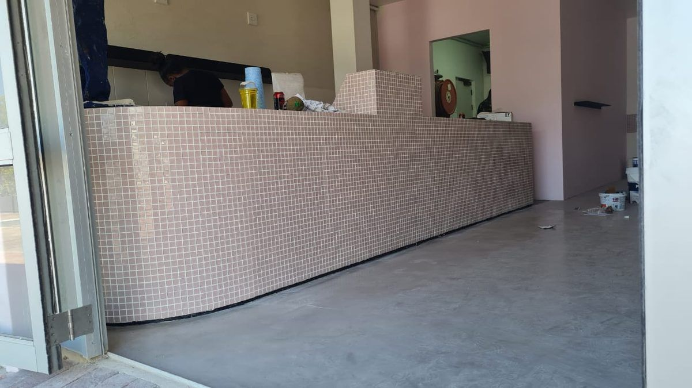
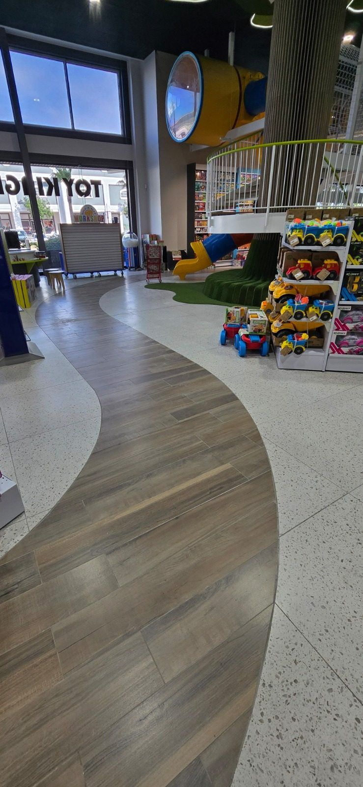

Gallery




Beautifully capturing the joy and love of your special day in Cape Town.
Get In TouchJoe's Photography is a Cape Town-based photography service specializing in capturing the magic of weddings. We understand that your wedding day is one of the most important days of your life, and we are committed to preserving those memories in stunning photos that you will cherish forever.
Founded by Joe, a passionate photographer with an eye for detail and a love for storytelling, our approach is personal and professional. We take the time to understand your vision and ensure that every photo reflects the unique essence of your celebration.
Our promise to you is a collection of photographs that not only document your day but also tell your love story with authenticity and heart. We believe in creating a comfortable environment where you can be yourself, allowing genuine emotions to shine through.
At Joe's Photography, we offer a range of services tailored to capture every special moment of your wedding day.
Capture the joy and togetherness of your wedding party with expertly composed group photos. We ensure every member is perfectly positioned to create a lasting memory of your special day.
Celebrate your love with intimate and romantic couple photos. Our goal is to capture the genuine connection between you and your partner in breathtaking locations.


We'd love to hear from you — reach out to us anytime.